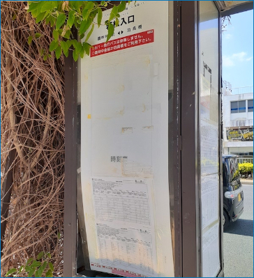

<!DOCTYPE html>
<html>
<head>
  <meta charset="UTF-8">
  <title>ぶらっとバス移動</title>
  <link rel="stylesheet" href="https://unpkg.com/leaflet@1.3.1/dist/leaflet.css" />
  <script src="https://unpkg.com/leaflet@1.3.1/dist/leaflet.js"></script>
  <script src="https://unpkg.com/polyline@0.2.0/src/polyline.js"></script>
  <script src="https://unpkg.com/axios/dist/axios.min.js"></script>
  <script>
    var map;
    var cpos;
    var r = 300; // バス停までの距離。半径rはデフォルト300m。
    const basepos = [ 26.33676, 127.800403 ]; // Lagoonの緯度経度
    const baseuri = 'https://api.ottop.org/transit/';
    const routeColors = ['red', 'blue', 'green', 'aqua', 'fuchsia', 'lime', 'purple', 'yellow'];
    const icon = L.icon({
      iconUrl: 'icons/busstop.png',
      iconSize: [ 32, 32 ],
      iconAnchor: [ 16, 16 ]
    });
    var data = '';
    var dataStops = '';
    var dataTimetable = '';
    var dataTrips = '';
    var testStops = '[{"id": "S3227", "lat": 26.336201, "lng": 127.800681, "name": "胡屋", "links": [{"href": "https://api.ottop.org/transit/stops/S3227", "rel": "self"}, {"href": "https://api.ottop.org/transit/stops/S3227/routes", "rel": "routes"}, {"href": "https://api.ottop.org/transit/stops/S3227/timetable", "rel": "timetable"}]}, {"id": "S4846", "lat": 26.337497, "lng": 127.800481, "name": "コザ信用金庫　胡屋支店　前", "links": [{"href": "https://api.ottop.org/transit/stops/S4846", "rel": "self"}, {"href": "https://api.ottop.org/transit/stops/S4846/routes", "rel": "routes"}, {"href": "https://api.ottop.org/transit/stops/S4846/timetable", "rel": "timetable"}]}, {"id": "S4860", "lat": 26.335758, "lng": 127.799562, "name": "ミュージックタウン", "links": [{"href": "https://api.ottop.org/transit/stops/S4860", "rel": "self"}, {"href": "https://api.ottop.org/transit/stops/S4860/routes", "rel": "routes"}, {"href": "https://api.ottop.org/transit/stops/S4860/timetable", "rel": "timetable"}]}, {"id": "S4837", "lat": 26.337217, "lng": 127.799145, "name": "一番街・サンシティ", "links": [{"href": "https://api.ottop.org/transit/stops/S4837", "rel": "self"}, {"href": "https://api.ottop.org/transit/stops/S4837/routes", "rel": "routes"}, {"href": "https://api.ottop.org/transit/stops/S4837/timetable", "rel": "timetable"}]}, {"id": "S3226", "lat": 26.335701, "lng": 127.800598, "name": "胡屋", "links": [{"href": "https://api.ottop.org/transit/stops/S3226", "rel": "self"}, {"href": "https://api.ottop.org/transit/stops/S3226/routes", "rel": "routes"}, {"href": "https://api.ottop.org/transit/stops/S3226/timetable", "rel": "timetable"}]}]';
    var testTimetable = '[{"agency": {"name": "沖縄市"}, "short_name": "", "long_name": "沖縄市循環バス（中部ルート）", "times": [{"arrival_time": "09:35", "departure_time": "09:35", "links": [{"href": "https://api.ottop.org/transit/trips/383a3931356230626230646438663635306537623364366566376165626161353030", "rel": "trips"}]}, {"arrival_time": "10:55", "departure_time": "10:55", "links": [{"href": "https://api.ottop.org/transit/trips/383a6337653865303964633764383366633531653362613836376630383036323034", "rel": "trips"}]}, {"arrival_time": "12:15", "departure_time": "12:15", "links": [{"href": "https://api.ottop.org/transit/trips/383a3364333963616130613137643866333933376134383130383937666336383064", "rel": "trips"}]}, {"arrival_time": "17:44", "departure_time": "17:44", "links": [{"href": "https://api.ottop.org/transit/trips/383a6531356633333962373665343365653633663665383737343839623234653834", "rel": "trips"}]}, {"arrival_time": "19:14", "departure_time": "19:14", "links": [{"href": "https://api.ottop.org/transit/trips/383a3765376239356138636234343539396464323535623237613932633564386165", "rel": "trips"}]}, {"arrival_time": "14:55", "departure_time": "14:55", "links": [{"href": "https://api.ottop.org/transit/trips/383a6332646566383930313161343139646434343733643066626436333335393161", "rel": "trips"}]}, {"arrival_time": "13:35", "departure_time": "13:35", "links": [{"href": "https://api.ottop.org/transit/trips/383a3165613931306539303565313133373039386538613339666130393064373833", "rel": "trips"}]}, {"arrival_time": "20:35", "departure_time": "20:35", "links": [{"href": "https://api.ottop.org/transit/trips/383a6530393738666661353832303339343563353462386635303838643437386161", "rel": "trips"}]}, {"arrival_time": "16:15", "departure_time": "16:15", "links": [{"href": "https://api.ottop.org/transit/trips/383a3235373034666336376339613937353537366564333339643936646232663062", "rel": "trips"}]}, {"arrival_time": "08:15", "departure_time": "08:15", "links": [{"href": "https://api.ottop.org/transit/trips/383a6636643362636430386362353733376362636435393233646463613964633931", "rel": "trips"}]}]}, {"agency": {"name": "沖縄市"}, "short_name": "", "long_name": "沖縄市循環バス（西部ルート）", "times": [{"arrival_time": "09:34", "departure_time": "09:34", "links": [{"href": "https://api.ottop.org/transit/trips/383a3036333938643937326531633131643636343963333661393365356433313632", "rel": "trips"}]}, {"arrival_time": "13:34", "departure_time": "13:34", "links": [{"href": "https://api.ottop.org/transit/trips/383a3835346435316430393066396565633266376263353465646634333132313661", "rel": "trips"}]}, {"arrival_time": "19:13", "departure_time": "19:13", "links": [{"href": "https://api.ottop.org/transit/trips/383a3833323064613133666332396564323262376631376161643162396634333731", "rel": "trips"}]}, {"arrival_time": "12:14", "departure_time": "12:14", "links": [{"href": "https://api.ottop.org/transit/trips/383a6230383833316530323833333339363735313761326138323964303963666363", "rel": "trips"}]}, {"arrival_time": "14:54", "departure_time": "14:54", "links": [{"href": "https://api.ottop.org/transit/trips/383a6634316433393237346162303934336636643364393130643766336230393064", "rel": "trips"}]}, {"arrival_time": "17:43", "departure_time": "17:43", "links": [{"href": "https://api.ottop.org/transit/trips/383a3332323566623034336561633431363539633466636264616131393663366137", "rel": "trips"}]}, {"arrival_time": "20:34", "departure_time": "20:34", "links": [{"href": "https://api.ottop.org/transit/trips/383a3234616163626536346162316366313061666232333138356436633135393230", "rel": "trips"}]}, {"arrival_time": "10:54", "departure_time": "10:54", "links": [{"href": "https://api.ottop.org/transit/trips/383a3964303164336463623230313838373030653132313966386338383866663534", "rel": "trips"}]}, {"arrival_time": "08:14", "departure_time": "08:14", "links": [{"href": "https://api.ottop.org/transit/trips/383a3731346430643461326232396531326637346262396336323962303032393165", "rel": "trips"}]}, {"arrival_time": "16:14", "departure_time": "16:14", "links": [{"href": "https://api.ottop.org/transit/trips/383a3331373632336333663231343338343535663932663432343031643063393838", "rel": "trips"}]}]}]';
    var testTrips = {};
    testTrips['383a3931356230626230646438663635306537623364366566376165626161353030'] = '{"stop_sequence": [{"stop_id": "S4851", "sequence": 0, "arrival_time": "08:40", "departure_time": "08:40", "links": [{"href": "https://api.ottop.org/transit/stops/S4851", "rel": "stops"}]}, {"stop_id": "S4833", "sequence": 1, "arrival_time": "08:43", "departure_time": "08:43", "links": [{"href": "https://api.ottop.org/transit/stops/S4833", "rel": "stops"}]}, {"stop_id": "S4832", "sequence": 2, "arrival_time": "08:44", "departure_time": "08:44", "links": [{"href": "https://api.ottop.org/transit/stops/S4832", "rel": "stops"}]}, {"stop_id": "S4867", "sequence": 3, "arrival_time": "08:48", "departure_time": "08:48", "links": [{"href": "https://api.ottop.org/transit/stops/S4867", "rel": "stops"}]}, {"stop_id": "S4861", "sequence": 4, "arrival_time": "08:49", "departure_time": "08:49", "links": [{"href": "https://api.ottop.org/transit/stops/S4861", "rel": "stops"}]}, {"stop_id": "S4866", "sequence": 5, "arrival_time": "08:51", "departure_time": "08:51", "links": [{"href": "https://api.ottop.org/transit/stops/S4866", "rel": "stops"}]}, {"stop_id": "S4847", "sequence": 6, "arrival_time": "08:55", "departure_time": "08:55", "links": [{"href": "https://api.ottop.org/transit/stops/S4847", "rel": "stops"}]}, {"stop_id": "S4859", "sequence": 7, "arrival_time": "08:58", "departure_time": "08:58", "links": [{"href": "https://api.ottop.org/transit/stops/S4859", "rel": "stops"}]}, {"stop_id": "S4834", "sequence": 8, "arrival_time": "09:01", "departure_time": "09:01", "links": [{"href": "https://api.ottop.org/transit/stops/S4834", "rel": "stops"}]}, {"stop_id": "S4854", "sequence": 9, "arrival_time": "09:03", "departure_time": "09:03", "links": [{"href": "https://api.ottop.org/transit/stops/S4854", "rel": "stops"}]}, {"stop_id": "S4857", "sequence": 10, "arrival_time": "09:06", "departure_time": "09:06", "links": [{"href": "https://api.ottop.org/transit/stops/S4857", "rel": "stops"}]}, {"stop_id": "S4855", "sequence": 11, "arrival_time": "09:07", "departure_time": "09:07", "links": [{"href": "https://api.ottop.org/transit/stops/S4855", "rel": "stops"}]}, {"stop_id": "S4858", "sequence": 12, "arrival_time": "09:08", "departure_time": "09:08", "links": [{"href": "https://api.ottop.org/transit/stops/S4858", "rel": "stops"}]}, {"stop_id": "S4841", "sequence": 13, "arrival_time": "09:14", "departure_time": "09:14", "links": [{"href": "https://api.ottop.org/transit/stops/S4841", "rel": "stops"}]}, {"stop_id": "S4849", "sequence": 14, "arrival_time": "09:16", "departure_time": "09:16", "links": [{"href": "https://api.ottop.org/transit/stops/S4849", "rel": "stops"}]}, {"stop_id": "S4853", "sequence": 15, "arrival_time": "09:17", "departure_time": "09:17", "links": [{"href": "https://api.ottop.org/transit/stops/S4853", "rel": "stops"}]}, {"stop_id": "S4840", "sequence": 16, "arrival_time": "09:19", "departure_time": "09:19", "links": [{"href": "https://api.ottop.org/transit/stops/S4840", "rel": "stops"}]}, {"stop_id": "S4863", "sequence": 17, "arrival_time": "09:21", "departure_time": "09:21", "links": [{"href": "https://api.ottop.org/transit/stops/S4863", "rel": "stops"}]}, {"stop_id": "S4839", "sequence": 18, "arrival_time": "09:25", "departure_time": "09:25", "links": [{"href": "https://api.ottop.org/transit/stops/S4839", "rel": "stops"}]}, {"stop_id": "S4830", "sequence": 19, "arrival_time": "09:29", "departure_time": "09:29", "links": [{"href": "https://api.ottop.org/transit/stops/S4830", "rel": "stops"}]}, {"stop_id": "S4837", "sequence": 20, "arrival_time": "09:31", "departure_time": "09:31", "links": [{"href": "https://api.ottop.org/transit/stops/S4837", "rel": "stops"}]}, {"stop_id": "S4860", "sequence": 21, "arrival_time": "09:35", "departure_time": "09:35", "links": [{"href": "https://api.ottop.org/transit/stops/S4860", "rel": "stops"}]}, {"stop_id": "S4851", "sequence": 22, "arrival_time": "09:40", "departure_time": "09:40", "links": [{"href": "https://api.ottop.org/transit/stops/S4851", "rel": "stops"}]}], "polyline": {"points": "mkv_Diy`kW`@_@dArAhBhCnAiBb@cBLkBJiAf@eAb@g@f@m@p@u@`A_A|@cAXWPg@Bo@wAk@}Ao@}@sAo@iB?EsAqL_AuG??e@gDKw@mCwJm@u@mCyGe@gAiA{CmAiA[[w@u@??USu@e@s@g@i@c@{@s@kBaA{Ay@QIwD{AqDwAKEeCcAYKu@g@_@YGG??YY_@g@U]Wa@a@}@MYXMz@a@\\\\M?AfDgBnDwAu@uAYqA}A{DcBoEk@kAkCdA?@_Bp@GBmCpAwAp@uAl@cCpAmB~@}@b@}BdAmCnASJ?@gBx@sAr@wAp@gEtBcEbAgCh@aCf@e@J_Ff@T`@J~@J??AK@L~@x@hEf@lCf@jCt@xDR~@Px@Ah@j@Kl@M@?nDs@zBe@`Cg@nBc@rBc@jAYp@`B~@dCV|@??Ph@dBpF?@r@hDBL\\\\`BHf@??Jl@h@jCNx@ZKlA[z@QXA\\\\IZAjBIL?~EQh@G\\\\M|CsAlB{@l@Y~@e@tAo@zB_Ah@WjAvCFNd@|ARjADZDn@HdABR@VZvDJrA\\\\jEeAVGBk@Je@HE?U@IAC?MAUE_@Me@MS?SBSDSFWLc@ZoBlBaAv@Sh@?@Qd@q@hAo@X{@Cw@UsAi@q@GiBK?P?\\\\A\\\\EVGTINQTMNKPEPAL?VGpAEjA?V@NBHDPlAnD??FRh@|AZz@FRDTBL?HKLORKLQN[P]JW\\\\MLc@N[A_@I[x@Uj@Uf@MVIFMDWBeAJq@BuADgAB[DKDCBMRCTClCGRR?z@b@??vLzFNTR?x@b@??fCrAl@\\\\jAZpAX~APbCA?AhBAnAh@`Ah@^\\\\TXT\\\\Zn@xA}@x@g@dAi@nAo@r@u@`@W@?`@[~@y@ZlANh@Rr@Jd@FVnBsEDMx@cBT]L[DI`AoCBGh@_BVu@pAsADIXg@~@uAhByBoAeBs@cAk@s@a@^", "length": 301}}';
    testTrips['383a3036333938643937326531633131643636343963333661393365356433313632'] = '{"stop_sequence": [{"stop_id": "S4851", "sequence": 0, "arrival_time": "08:40", "departure_time": "08:40", "links": [{"href": "https://api.ottop.org/transit/stops/S4851", "rel": "stops"}]}, {"stop_id": "S4836", "sequence": 1, "arrival_time": "08:42", "departure_time": "08:42", "links": [{"href": "https://api.ottop.org/transit/stops/S4836", "rel": "stops"}]}, {"stop_id": "S4831", "sequence": 2, "arrival_time": "08:43", "departure_time": "08:43", "links": [{"href": "https://api.ottop.org/transit/stops/S4831", "rel": "stops"}]}, {"stop_id": "S4838", "sequence": 3, "arrival_time": "08:48", "departure_time": "08:48", "links": [{"href": "https://api.ottop.org/transit/stops/S4838", "rel": "stops"}]}, {"stop_id": "S4848", "sequence": 4, "arrival_time": "08:51", "departure_time": "08:51", "links": [{"href": "https://api.ottop.org/transit/stops/S4848", "rel": "stops"}]}, {"stop_id": "S4856", "sequence": 5, "arrival_time": "08:54", "departure_time": "08:54", "links": [{"href": "https://api.ottop.org/transit/stops/S4856", "rel": "stops"}]}, {"stop_id": "S4852", "sequence": 6, "arrival_time": "09:00", "departure_time": "09:00", "links": [{"href": "https://api.ottop.org/transit/stops/S4852", "rel": "stops"}]}, {"stop_id": "S4843", "sequence": 7, "arrival_time": "09:05", "departure_time": "09:05", "links": [{"href": "https://api.ottop.org/transit/stops/S4843", "rel": "stops"}]}, {"stop_id": "S4844", "sequence": 8, "arrival_time": "09:07", "departure_time": "09:07", "links": [{"href": "https://api.ottop.org/transit/stops/S4844", "rel": "stops"}]}, {"stop_id": "S4862", "sequence": 9, "arrival_time": "09:08", "departure_time": "09:08", "links": [{"href": "https://api.ottop.org/transit/stops/S4862", "rel": "stops"}]}, {"stop_id": "S4850", "sequence": 10, "arrival_time": "09:11", "departure_time": "09:11", "links": [{"href": "https://api.ottop.org/transit/stops/S4850", "rel": "stops"}]}, {"stop_id": "S4865", "sequence": 11, "arrival_time": "09:14", "departure_time": "09:14", "links": [{"href": "https://api.ottop.org/transit/stops/S4865", "rel": "stops"}]}, {"stop_id": "S4864", "sequence": 12, "arrival_time": "09:15", "departure_time": "09:15", "links": [{"href": "https://api.ottop.org/transit/stops/S4864", "rel": "stops"}]}, {"stop_id": "S4835", "sequence": 13, "arrival_time": "09:17", "departure_time": "09:17", "links": [{"href": "https://api.ottop.org/transit/stops/S4835", "rel": "stops"}]}, {"stop_id": "S4868", "sequence": 14, "arrival_time": "09:18", "departure_time": "09:18", "links": [{"href": "https://api.ottop.org/transit/stops/S4868", "rel": "stops"}]}, {"stop_id": "S4845", "sequence": 15, "arrival_time": "09:19", "departure_time": "09:19", "links": [{"href": "https://api.ottop.org/transit/stops/S4845", "rel": "stops"}]}, {"stop_id": "S4842", "sequence": 16, "arrival_time": "09:22", "departure_time": "09:22", "links": [{"href": "https://api.ottop.org/transit/stops/S4842", "rel": "stops"}]}, {"stop_id": "S4846", "sequence": 17, "arrival_time": "09:25", "departure_time": "09:25", "links": [{"href": "https://api.ottop.org/transit/stops/S4846", "rel": "stops"}]}, {"stop_id": "S4830", "sequence": 18, "arrival_time": "09:30", "departure_time": "09:30", "links": [{"href": "https://api.ottop.org/transit/stops/S4830", "rel": "stops"}]}, {"stop_id": "S4860", "sequence": 19, "arrival_time": "09:34", "departure_time": "09:34", "links": [{"href": "https://api.ottop.org/transit/stops/S4860", "rel": "stops"}]}, {"stop_id": "S4851", "sequence": 20, "arrival_time": "09:40", "departure_time": "09:40", "links": [{"href": "https://api.ottop.org/transit/stops/S4851", "rel": "stops"}]}], "polyline": {"points": "mkv_Diy`kW`@_@tA}Ar@|@p@|@fApAZiAPaCJiAf@eAb@g@f@m@p@u@`A_A|@cAXWPg@Bo@HkAKoAM}B@k@XcANe@jBdAfAT`AV~@b@nAuA`BwAp@q@TSb@C?Ad@EzD`@f@Js@nC}BtHkBjD]`Aq@dD{A~BMt@SrAy@zDC`@dAlAxCjBFDjAt@PVj@Th@LvAFl@ZPrBHZPp@Rj@Zb@v@z@b@RbA\\\\ZNPZh@rAP^TNf@Ln@JhARVP^TTXT`APlB??JvANbCBl@B~@PjAH`@`@lCf@jDNzA\\\\I|@?pAJjFVTPVI`AC^??AD?RDRMh@MrFoAjAMnAC`AB\\\\FHc@PcCLcCBsDGg@y@Cq@??W@KXK@AZA?Jc@BMN?HtBCHt@@tDEhAWbEOt@If@[zCM|AO^D^Iz@WfA]v@a@p@i@j@o@`@s@ZeATuATo@TiA^_B\\\\cAFyBLyCf@{Cf@d@Zn@f@VVRV\\\\l@f@bA`@`AP^fAzBVv@Ld@F\\\\@H@RJpAHtABV??F|@Bl@}@JaANu@P_@L?@OBsAb@_AX]JcDbAqBl@sCz@oBj@kA^}DhAkA^?@mCt@qIfCeBqHWmAe@sB~@[jAs@HGRUl@}@PWNQZW\\\\Or@Q\\\\K^Mj@WfBgA~@g@@?z@a@c@eBW}@o@u@_@WYU]i@Ys@c@kAOg@]e@}@y@oAyAiAuAIIaAm@WD[K[ImAg@OGw@]w@]k@U??[MaBs@oCmBgBwAMPs@pAA?Yd@y@m@q@e@u@k@s@g@s@g@s@g@e@]]SOKKOCIAM?_@Ak@?QAMGQM_@]}@K_@a@aA_AsAwAmBKM??}@eAq@o@ACEKGU`@}@^w@`@y@\\\\u@`BkDGWKe@Ss@Oi@[mAgBiCi@w@??k@{@]e@_@k@sAxA_BrAsAtAIFqDnD]\\\\iB@?@wB@g@?q@DEL?NrFxCJNNBpCxAdAHjCPrAPlA\\\\xBtB`CgF`BkDnBsEDMx@cBT]L[DI`AoCBGh@_BVu@pAsADIXg@~@uAhByBoAeBs@cAk@s@a@^", "length": 328}}';
    var today = '';
    var cstopId = '';
    var tripId = '';
    var colorIndex = 0;
    var nearStops = '';
    var stopTable = [];
    var routeTable = [];
    function init() {
      const base = 1000000;
      if(navigator.userAgent.match(/(iPhone|iPad|iPod|Android)/i)){
        //スマホ　or タブレット
        navigator.geolocation.watchPosition(function(gpos) {
          let clat = Math.round(gpos.coords.latitude * base) / base;
          let clng = Math.round(gpos.coords.longitude * base) / base;
          cpos = [ clat, clng ];
        }, function() {
      		alert("現在位置に取得に失敗！");
      	})
      }else{
        //その他(パソコン等GPSを取得できないデバイス)
        cpos = basepos; // 現在地をデフォルトに設定する。
      }
      //地図を表示するdiv要素のidを設定
      //ズームコントロールを非表示で地図を作成
      map = L.map('mapcontainer', { zoomControl: false });
      //地図の中心とズームレベルを指定
      map.setView(cpos, 17);
      //表示するタイルレイヤのURLとAttributionコントロールの記述を設定して、地図に追加する
      //地理院地図の淡色地図タイル
      L.tileLayer('http://cyberjapandata.gsi.go.jp/xyz/pale/{z}/{x}/{y}.png', {
        attribution: "<a href='http://portal.cyberjapan.jp/help/termsofuse.html' target='_blank'>地理院タイル</a>"
      }).addTo(map);
      //スケールコントロールを最大幅200px、右下、m単位で地図に追加
      L.control.scale({ maxWidth: 200, position: 'bottomright', imperial: false }).addTo(map);
      //ズームコントロールを左下で地図に追加
      L.control.zoom({ position: 'bottomleft' }).addTo(map);
      //近隣のバス停の検索範囲を表示(circleオブジェクトを作成して地図に追加)
      nearStops = L.circle(cpos, { radius: r, color: 'CornflowerBlue', weight: 1, fill: true, fillColor: 'blue', opacity: 0.2 }).addTo(map);
      //現在の位置にマーカーを地図に追加
      //ポップアップする文字
      cname = "いまここ!!";
      //ポップアップオブジェクトを作成
      var cpopup = L.popup().setContent(cname);
      //半径をピクセルで指定するcircleMarkerオブジェクトを現在地に追加
      //マーカーにポップアップを紐付けする。同時にbindTooltipでツールチップも追加
      L.circleMarker(cpos, { radius: 10, color: 'white', weight: 3, fill: true, fillColor: 'lime', opacity: 1.0 }).bindPopup(cpopup).bindTooltip(cname).addTo(map);
      //近隣のバス停情報を取得する。
      getStops(cpos, r / 1000);
    }
    function getStops(pos, distance) {
      let url = baseuri + 'stops?origin_latitude=' + pos[0] + '&origin_longitude=' + pos[1] + '&distance=' + distance;
      if(testStops == ''){
        getData(url, callbackStops);
      }else{
        callbackStops(JSON.parse(testStops), url);
      }
    }
    function callbackStops(data, url) {
      dataStops = data;
      console.log('dataStops:', dataStops);
      for (let stop of dataStops) {
        console.log(stop.name);
        //バス停のマーカーを追加
        bspos = [stop.lat, stop.lng];
        bsname = stop.name;
        //L.marker(bspos,{title: bsname}).addTo(map);
        //ポップアップする文字（HTML可、ここでは画像を表示）
        var bscontents = "バス停情報<br>" + bsname + "<br><br>";
        //ポップアップオブジェクトを作成
        var bspopup = L.popup({ maxWidth: 350 }).setContent(bscontents);
        //マーカーにポップアップを紐付けする。同時にbindTooltipでツールチップも追加
        let bsmarker = L.marker(bspos, {icon: icon}).bindPopup(bspopup).bindTooltip(bsname).on('click', onStopClick).addTo(map);
        stopTable.push([stop.id, bsmarker, bsname, bspos]);
      }
    }
    function onStopClick(e) {
      //markerのclickイベントで呼び出される
      console.log(e);
      for (let stop of stopTable) {
        if(stop[1] == e.target) {
          cstopId = stop[0];
          console.log(stop[2]);
          getTimetable(stop[0]);
        }else{
          map.removeLayer(stop[1]);
        }
      }
      map.removeLayer(nearStops);
    }
    function getTimetable(id) {
      today = new Date();
      let date = today.getFullYear() + '-' + ('0' + (today.getMonth() + 1)).slice(-2) + '-' + ('0' + today.getDate()).slice(-2);
      console.log('date:', date);
      let url = baseuri + 'stops/' + id + '/timetable?date=' + date + '&refs=true';
      if(testTimetable == ''){
        getData(url, callbackTimetable);
      }else{
        callbackTimetable(JSON.parse(testTimetable), url);
      }
    }
    function callbackTimetable(data, url) {
      dataTimetable = data;
      ctime = '09:30';
      console.log('dataTimetable:', dataTimetable);
      for (let timetable of dataTimetable) {
        tmptime = '';
        tmphref = '';
        for (let time of timetable.times) {
          if (time.departure_time >= ctime) {
            if (tmptime != '') {
              if (time.departure_time < tmptime) {
                tmptime = time.departure_time;
                tmphref= time.links[0].href;
              }
            } else {
              tmptime = time.departure_time;
              tmphref= time.links[0].href;
            }
          }
        }
        console.log('tmptime:', tmptime);
        tripId = tmphref.substr(tmphref.lastIndexOf('/') + 1);
        console.log('tripId:', tripId);
        getTrips(tripId);
      }
    }
    function getTrips(id) {
      let url = baseuri + 'trips/' + id + '?refs=true&shape=true';
      if(testTrips == ''){
        getData(url, callbackTrips);
      }else{
        callbackTrips(JSON.parse(testTrips[id]), url);
      }
    }
    function callbackTrips(data, url) {
      dataTrips = data;
      console.log('dataTrips:', dataTrips);
      //シェイプデータをデコード
      var points = polyline.decode(dataTrips.polyline.points);
      //polylineオブジェクトを作成して地図に追加
      //bubblingMouseEvents属性をfalseに設定しておき、イベントがmapオブジェクトに連鎖するのを防ぐ
      //plineのclickイベントでonRouteClick関数を呼び出す
      pline = L.polyline(points, { color: routeColors[colorIndex++], weight: 5, bubblingMouseEvents: false }).on('click', onRouteClick).addTo(map);
      tripId = tmphref.substr(tmphref.lastIndexOf('/') + 1, 68);
      routeTable.push([tripId, pline, data]);
      console.log('routeTable:', routeTable);
    }
    function onRouteClick(e) {
      //polylineのclickイベントで呼び出される
      for (let trip of routeTable) {
        if(trip[1] == e.target) {
          console.log('cstopId:', cstopId);
          console.log('trip[2]:', trip[2]);
          var stopDisplay = false;
          for (let stop of trip[2].stop_sequence) {
            if (stopDisplay) {
              console.log('stop["stop_id"]:', stop["stop_id"]);
              console.log('stop["arrival_time"]:', stop["arrival_time"]);
            }
            if (stop['stop_id'] == cstopId) {
              stopDisplay = true;
            }
          }
        }else{
          map.removeLayer(trip[1]);
        }
      }
    }
    function getData(uri, callback) {
      console.log('axios.get:', uri);
      axios.get(uri)
          // thenで成功した場合の処理をかける
          .then(response => {
              console.log('status:', response.status); // 200
              callback(response.data, response.config.url);
          // catchでエラー時の挙動を定義する
          }).catch(err => {
              console.log('Error:', err);
          });
    }
   </script>
</head>
<body onload="init()">
  <!-- style属性に次のように設定するとブラウザの画面全体に表示される -->
  <div id="mapcontainer" style="position:absolute;top:0;left:0;right:0;bottom:0;"></div>
</body>
</html>
